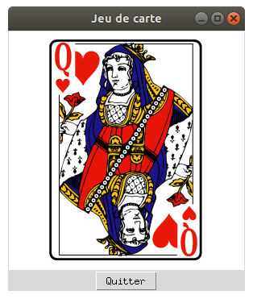

Jeu de carte
Le programme suivant dessine une carte sur un canvas. Un clic gauche avec la souris sur la carte retourne celle-ci.

Voici le programme. Pour le tester, vous aurez besoin de copier les fichiers carte<numero>.png dans le même dossier que le fichier python contenant le programme.
import tkinter as tk
# Variables globales
LARGEUR, HAUTEUR = 292, 296
no_image = 1 # No de carte
def change_carte(event):
"""Changement de carte si clic sur la carte"""
global no_image, imgtk
# On verifie que le clic a eu lieu sur la carte
if 50 < event.x < 242 and 10 < event.y < 286:
no_image = no_image % 8 + 1 # echange du no de carte
imgtk = tk.PhotoImage(file="carte" + str(no_image) + ".png")
# On charge la nouvelle image
surface_dessin.itemconfigure(ma_carte, image=imgtk)
# Création de la fenêtre principale (main window)
mon_app = tk.Tk()
mon_app.title('Jeu de carte')
# Création d'un widget Canvas (zone graphique)
surface_dessin = tk.Canvas(mon_app, width=LARGEUR, height=HAUTEUR, bg='white')
surface_dessin.grid(row=0, column=0)
# La méthode bind() permet de lier un événement avec une fonction :
# un clic gauche sur la surface provoquera l'appel de la fonction clic()
surface_dessin.bind('<Button-1>', change_carte)
# Bouton quitter
tk.Button(mon_app, text = 'Quitter', command = mon_app.destroy).grid(row=1, column=0)
# Placement de l'image initiale designee par "ma_carte" sur le canvas
imgtk = tk.PhotoImage(file="carte1.png")
ma_carte = surface_dessin.create_image((50, 10), image=imgtk, anchor="nw")
mon_app.mainloop()Affichage d'un fichier image sur un Canvas
L'affichage d'un fichier .png sur un Canvas se fait simplement à l'aide de ces deux lignes :
imgtk = tk.PhotoImage(file="carte1.png")
ma_carte = surface_dessin.create_image((50, 10), image=imgtk, anchor="nw")
La première ligne charge l'image en mémoire dans la variable imgtk, et la seconde se charge de son affichage sur la surface
graphique aux coordonnées indiquées.
Le paramètre anchor sert à indiquer que les coordonnées donées sont
celles du coin supérieur gauche.
Dans le reste du programme, l'objet image sur la surface graphique sera accessible via la variable ma_carte.
Retournement de la carte
Pour retourner la carte, on doit reconfigurer l'objet ma_carte afin de
modifier son attribut image sur l'autre face de l'image. Cela se fait gràce à la méthode itemconfigure() de la surface graphique :
surface_dessin.itemconfigure(ma_carte, image=imgtk)
Le reste de la fonction change_carte() se charge d'alterner les images.
On utilise pour cela une petite astuce utilisant l'opération modulo :
no_image = no_image % 8 + 1 # echange du no de carte
Pour finir, on s'assure de ne retourner la carte que si le clic a été fait dans la zone de la carte. Comme on connaît les coordonnées du clic, un test d'intervalle pour les coordonnées se charge de cette vérification.